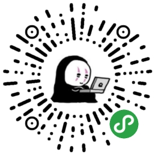

whosmeya
文章
STH
工具
头像添加边框
图片添加文字
图片编辑
房贷计算器
URI转码
身份证校验
Canvas
Canvas视频发射弹幕
Canvas循环滚动弹幕（带头像）
Canvas黑客帝国
Canvas绘制常用方程曲线
JavaScript
事件捕获、事件冒泡、事件委托
Iframe父子页面数据传递
CSS
CSS实现“心”
Animation实现无限轮播滚动
疑难杂症
Android iOS 获取 body.scrollTop 不一致
微信浏览器 iOS input 失焦页面不回弹
其他
前端history路由实现
弹出框布局设计
Input打开摄像头
获取Audio/Video时长
小蝌蚪找妈妈
坦克大战
爱编程，爱生活。
沪公网安备 31011002004530号
豫ICP备19024432号-1
二维码
×
